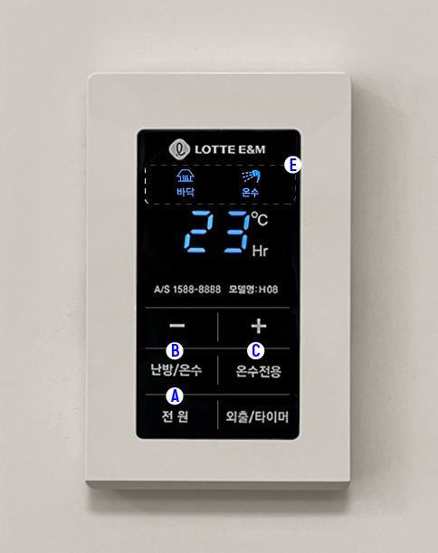
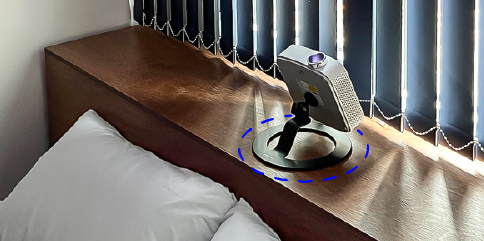
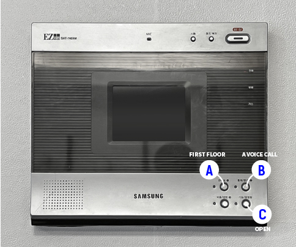
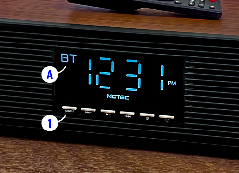

한국말 FAQ
01. 다도법
02. 싱잉볼 사용법과 가이드 명상
03. 난방패널 사용법
-
1. a.전원버튼을 눌러 난방을 켜주세요.
-
2. B버튼으로 난방&온수 모드를 / C 버튼으로 온수만 모드를 선택 할 수 있습니다.
E부분의 아이콘을 통해 현재의 모드 상태를 알 수 있습니다.
04. 프로젝터 사용법
-
1. 프로젝터 뒤쪽의 전원슬라이드를 ‘on’에 맞춰주세요

-
2. 빨간불이 들어온 전원버튼을 누른후 15초 가량 기다려 주세요.
(초점 조작부를 통해 초점을 조절할 수 있습니다.) -
3. 침대 머리맡의 적절한 위치에 프로젝터를 위치시켜 주세요
-
4. 곧. 노이즈 화면이 뜹니다, 프로젝터 리모컨 중앙에 있는 집모양의 버튼을 눌러주세요

-
5. 넷플릭스, 웨이브, 티빙, 유투브 등 다양한 OTT서비스를 이용할 수 있습니다.

-
6. 침대에 누워 편안한 자세로 영상을 즐기시길 바랍니다.

05. 배달기사가 현관문 개방을 요청했을 때
-
1. 경비실 버튼을 누릅니다.
- 2. 문열림 기능을 누르면 1층 현관문이 열립니다.
06. 세탁기 사용법
-
1. 세탁기 좌 상단의 세제 투입구를 열어 세제를 투입해 주세요. 세제는 새탁기 좌측 수납함에 있습니다.

- 2. (선택)2번 투입구에 섬유 유연제를 넣어 주세요.
- 3. 세탁기의 전원을 켜 주세요.
- 4. 모드 선택용 회전스위치응 조작해 세탁모드를 설정해 주세요. (표준세탁 권장)
- 5. 동작 버튼을 눌러 세탁을 시작하세요.
07. 블루투스 스피커 사용법
-
1. mode 버튼을 눌러 a부분에 ‘BT’ (bluetoose)표시가 보이도록 해주세요
-
2. 스마트폰 블루투스 화면에서 ‘MGTEC WoodClassic’ 을 찾아 페어링해 주신후, 스마트 폰 상에서 음악을 재생시켜 주세요.